Épargne, bourse, crypto, immobilier et budget réunis dans une seule application, sur votre téléphone. Ce guide vous accompagne de l'installation à votre premier import, en une vingtaine de minutes.
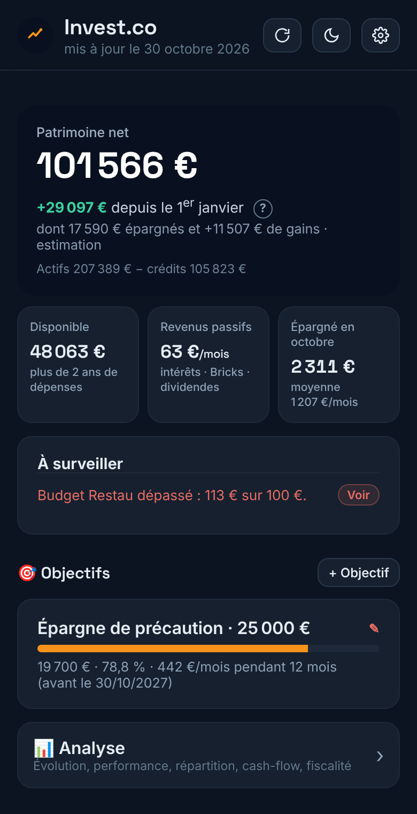
Vos actifs moins vos crédits, mis à jour à chaque opération.
Relevés CSV de votre banque et exports de plateformes crypto.
Revenus nets d'impôt, plafonds et taux officiels datés.
Rendement net, cash-flow, plus-value latente et crédits.
Une cible, une échéance, l'effort mensuel à fournir.
Stockées sur votre appareil et protégées par code ou empreinte.
Invest.co est une application web installable : elle s'ouvre depuis votre navigateur, puis s'installe sur votre écran d'accueil comme une application classique, sans passer par un store.
Invest.co fonctionne aussi dans Chrome, Edge ou Safari sur ordinateur ; Chrome et Edge proposent également de l'installer. Chaque appareil conserve ses propres données (voir chapitre 07 pour passer de l'un à l'autre).
Au premier lancement, un écran d'accueil vous propose :
La barre de navigation donne accès aux cinq espaces : Bord (vue d'ensemble), Placements, Budget, Revente et Ajouter.
Pour afficher des revenus nets d'impôt fiables, ouvrez ⚙ Réglages › Ma situation fiscale :
| Réglage | À indiquer |
|---|---|
| Tranche d'imposition | Votre TMI (0, 11, 30, 41 ou 45 %), visible sur votre avis d'impôt. |
| Crypto / CTO | Prélèvement forfaitaire unique (PFU) ou option pour le barème. |
| Crowdfunding | PFU ou barème pour les intérêts perçus. |
| Achat-revente | Ventes occasionnelles d'objets personnels, ou activité d'achat-revente (micro-BIC). |
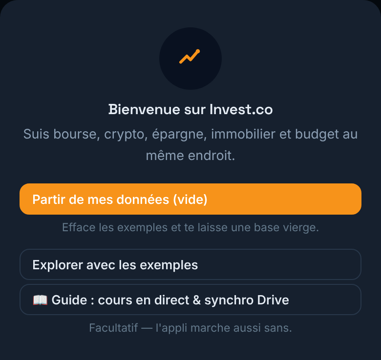
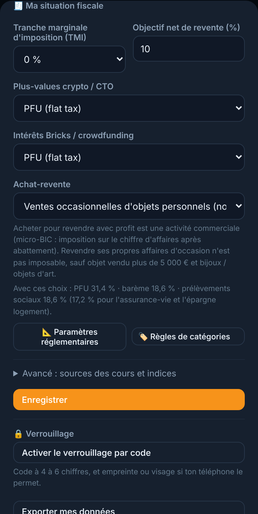
Les versements et retraits suivants se saisissent comme des opérations : touchez la fiche du produit, puis + Opération. Le solde est toujours recalculé à partir de l'historique, et les intérêts suivent la règle officielle des quinzaines.
Chaque produit affiche son solde, son taux, les intérêts de l'année (estimation nette d'impôt) et, pour un livret, la jauge de son plafond. Touchez la fiche pour le détail : montant versé, intérêts perçus et opérations.
Pour une assurance-vie, un livret bancaire ou un portefeuille de plateforme, indiquez le taux et sa date d'entrée en vigueur. Lorsqu'il change, saisissez le nouveau taux à sa date : l'ancien reste appliqué aux jours passés.
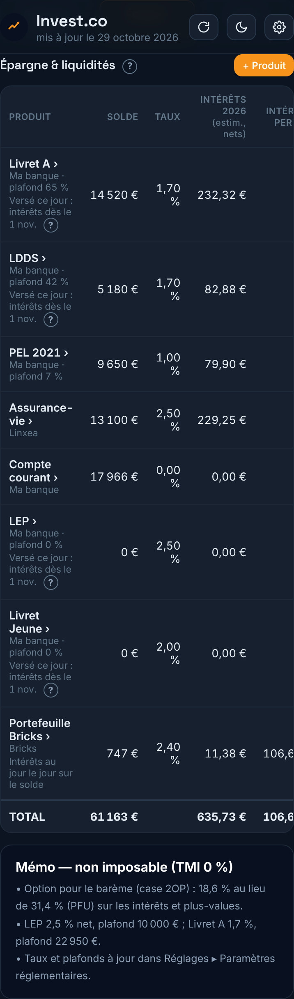
Sur les livrets réglementés (Livret A, LDDS, LEP, Livret Jeune, CEL), les intérêts ne se calculent pas au jour près mais par périodes de quinze jours : du 1er au 15 et du 16 à la fin du mois.
Il rapporte à partir du début de la quinzaine suivante. Versé le 10 mars : intérêts dès le 16 mars. Versé le 20 mars : dès le 1er avril.
Il cesse de rapporter dès le début de la quinzaine en cours. Retiré le 20 mars : plus d'intérêts depuis le 16 mars.
Sous chaque livret, Invest.co indique à partir de quand un versement effectué le jour même commencera à rapporter, par exemple « Versé ce jour : intérêts dès le 1 nov. ».
Les livrets bancaires, l'assurance-vie et les portefeuilles de plateforme sont calculés au jour le jour : chaque jour, le solde rapporte le taux annuel divisé par le nombre de jours de l'année.
Dans Placements › Bourse & crypto › + Actif, indiquez le nom, le symbole et l'enveloppe (PEA, CTO, plateforme crypto). Pour un ETF coté à Paris, le code Euronext suffit (par exemple CW8) ; pour le bitcoin, utilisez BTC-EUR. Le code ISIN (12 caractères, par exemple LU1681043599) est facultatif ; il est vérifié à la saisie.
Saisissez ensuite vos achats et ventes. Vos lignes s'affichent en fiches regroupées par enveloppe (PEA, compte-titres, plateforme crypto) avec leur sous-total : valeur, gain ou perte depuis l'achat et variation du jour. Touchez une fiche pour son détail : prix de revient, quantité, seuils de revente et opérations.
Crypto en direct : tant que l'application est ouverte, le cours de vos cryptomonnaies se met à jour en continu, avec la variation sur 24 heures (badge ● direct). Pour les actions et les ETF, le bouton ↻ Cours actualise les cotations et affiche la variation du jour, par rapport à la clôture de la séance précédente.
Touchez fiche PEA pour renseigner la date d'ouverture, l'établissement et vos versements d'argent sur le plan. Invest.co affiche alors :
Enregistrez chaque dividende avec + Ajouter › Opération › Dividende, en choisissant le titre et le montant net reçu. Il n'affecte pas votre prix de revient ; le total perçu apparaît sous le titre et dans le récapitulatif fiscal, en distinguant le PEA des autres comptes.
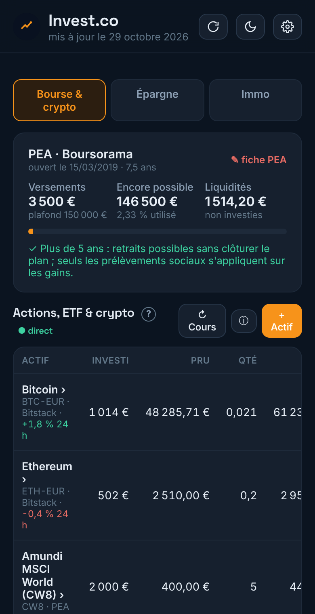
Plutôt que de tout saisir, importez le relevé de votre banque : Invest.co reconnaît automatiquement le format du fichier et classe chaque opération.
Compatible avec les exports CSV des principales banques et néobanques : colonnes Débit / Crédit, montant signé ou colonne de sens, formats de dates et de montants français ou anglais. Si une colonne est mal identifiée, corrigez-la dans la liste : l'aperçu se met à jour instantanément.
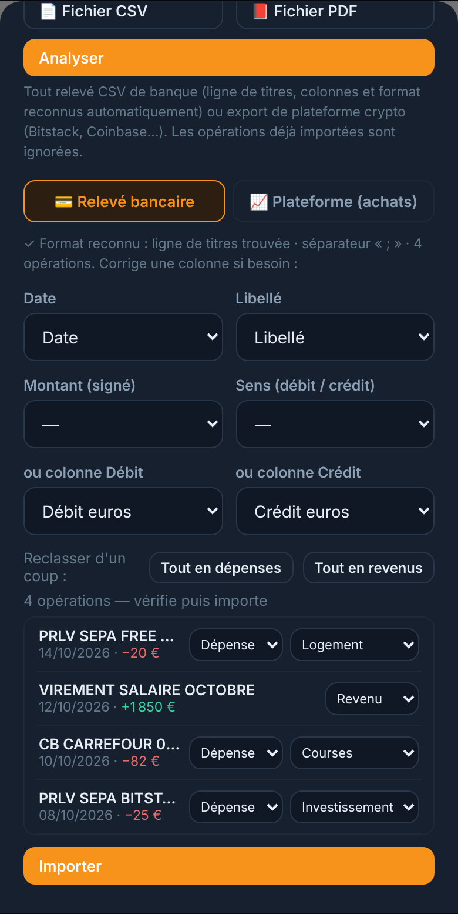
| Type | Traitement |
|---|---|
| Achat | Achats ponctuels, programmés ou arrondis : ajoutés à votre prix de revient. |
| Gratuit | Parrainages et bonus : crypto reçue à coût nul. |
| Vente | Cession : plus-value calculée au prix de revient moyen. |
| Ignorer | Retrait vers votre propre portefeuille ou dépôt d'euros : ni achat ni vente. |
Choisissez l'onglet Épargne et le compte concerné : versements, retraits, intérêts et virements avec votre compte courant y sont rattachés, sans double comptage. Le solde au début du relevé aligne l'historique, puis Invest.co compare son solde avec celui du relevé. Les intérêts de l'année sont alors recalculés sur vos vrais mouvements.
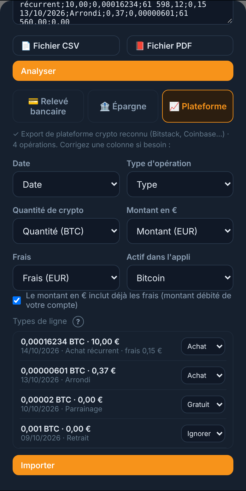
L'espace Budget suit votre compte courant mois par mois : où part l'argent, ce qui revient chaque mois, et l'écart avec ce que vous aviez prévu.
Touchez Budgets et attribuez un montant mensuel à chaque catégorie. Le tableau Prévu vs réel affiche l'écart, le mois précédent et la moyenne des trois derniers mois.
Loyer, abonnements, assurances : ajoutez-les via + Récurrent, ils sont enregistrés automatiquement à chaque échéance. Invest.co repère aussi les dépenses qui reviennent chaque mois et vous propose de les ajouter en un appui.
Les libellés sont classés automatiquement. Ajoutez vos propres règles dans Réglages › Règles de catégories, par exemple « boulangerie » vers Courses ; elles s'appliquent en priorité.
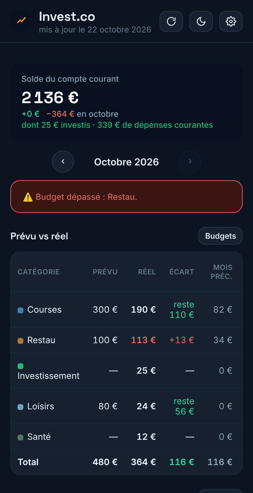
Placements › Immo › + Bien, puis choisissez le régime :
| Régime | Ce qui est calculé |
|---|---|
| Résidence principale | Valeur, plus-value latente et crédit. Pas de loyer ni de rendement. |
| Location nue | Rendement brut et net, cash-flow mensuel, plus-value latente. |
| LMNP (meublé) | Mêmes indicateurs que la location nue. |
Indiquez séparément le prix d'achat, les frais de notaire et le montant des travaux. Leur somme forme le coût de revient, base du rendement et de la plus-value latente (valeur estimée moins coût de revient).
Le rendement net rapporte les loyers encaissés, diminués de toutes les charges, au coût de revient. Le cash-flow déduit en plus la mensualité du crédit associé.
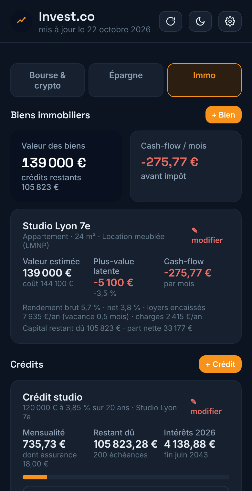
+ Crédit : capital emprunté, taux nominal, durée, date de déblocage et assurance, puis rattachez le crédit à son bien. Vous obtenez la mensualité, le tableau d'amortissement année par année et le capital restant dû, déduit automatiquement de votre patrimoine net.
Ajoutez une nouvelle estimation datée lorsque vous en obtenez une (agence, notaire, données de ventes). Les estimations précédentes sont conservées et la plus récente est utilisée pour votre patrimoine.
Vos projets ont leur propre onglet, Placements › Crowdfunding : capital placé, revenus mensuels nets, portefeuille de la plateforme, puis une fiche compacte par projet avec sa progression et le prochain versement.
Une pastille signale ce qui demande votre attention : versements à pointer ou capital à récupérer à l'échéance.
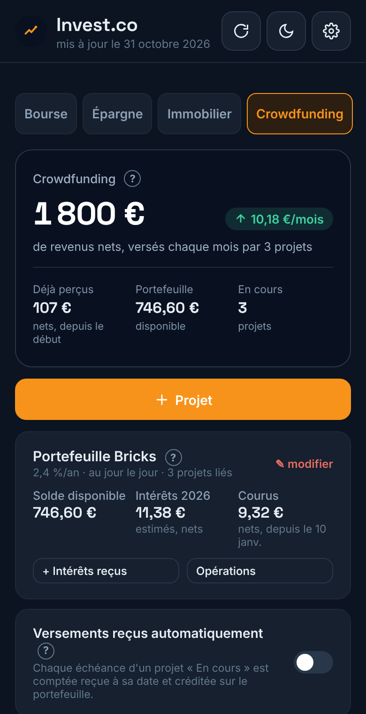
Touchez un projet : son échéancier s'affiche en liste, du plus récent au plus ancien, avec le montant net de chaque versement (intérêts bruts moins le prélèvement à la source).
Activez l'option dans l'onglet Crowdfunding : chaque échéance d'un projet « En cours » est comptée reçue à sa date et créditée sur le portefeuille. À l'activation, les échéances passées sont marquées reçues sans être recréditées. Un projet « Retard » ou « Défaut » reste à pointer à la main ; sinon, Tout pointer règle tous les versements en un geste.
Touchez la ligne du mois pour saisir le montant réellement reçu ou indiquer qu'il n'est pas encore reçu. Seul ce mois change ; l'échéancier reste intact.
L'argent non investi reste sur votre portefeuille, rémunéré au jour le jour. Les nouveaux projets y sont payés, les versements et le capital y reviennent ; + Intérêts reçus enregistre sa rémunération. Rien n'est ajouté pour le passé : le solde saisi contient déjà vos opérations antérieures.
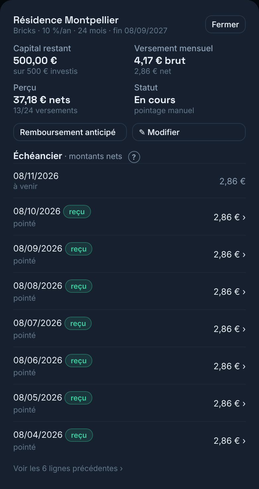
Votre patrimoine net, expliqué en une phrase : la variation depuis le 1er janvier, dont ce que vous avez épargné et ce que vos placements ont rapporté. Puis trois chiffres :
| Chiffre | Contenu |
|---|---|
| Disponible | Livrets et comptes hors assurance-vie, avec le nombre de mois de dépenses couverts. |
| Revenus passifs | Intérêts, versements de crowdfunding et dividendes, par mois. |
| Épargné du mois | Revenus moins dépenses courantes, comparé à votre moyenne. |
Le bloc À surveiller affiche au plus trois alertes, chacune avec son action (Voir, Pointer, Tout pointer). Vos objectifs suivent, avec l'effort mensuel nécessaire.
Depuis l'accueil, Analyse regroupe le bilan de l'année, l'évolution du patrimoine, la répartition (brute ou nette de crédits), la performance de vos placements, le cash-flow sur douze mois et le récapitulatif fiscal.
Valeur au 1er janvier. Elle est reconstituée automatiquement : soldes d'épargne au 31 décembre, titres détenus à leur cours de clôture de fin d'année (récupéré avec ↻ Cours), projets en cours, biens à leur estimation, moins le capital restant dû. Vous pouvez imposer une autre valeur dans Réglages › Avancé.
Épargne versée et gains. Vos revenus et versements de l'année moins vos dépenses, l'apport personnel d'un achat immobilier et le capital de crédit déjà remboursé constituent l'épargne versée ; le reste de la variation est un gain ou une perte. Un compte que vous possédiez déjà et que vous enregistrez est une reprise d'existant : ni épargne ni gain.
Performance. Elle porte sur vos placements financiers (bourse, crypto, épargne, crowdfunding), sans le compte courant ni l'immobilier. Le rendement s'affiche après trois mois de recul et n'est annualisé qu'au-delà d'un an.
Plus-values crypto. Elles suivent la règle fiscale française : chaque vente est comparée à la valeur de l'ensemble de votre portefeuille crypto (formulaire 2086). Lors d'une vente, Invest.co vous demande cette valeur, préremplie. Si vos ventes de l'année ne dépassent pas 305 €, la plus-value n'est pas imposable.
Revenus (dépôts sur votre compte courant), dépenses courantes hors catégorie Investissement, et montant épargné, mois par mois sur un an, dans l'écran Analyse.
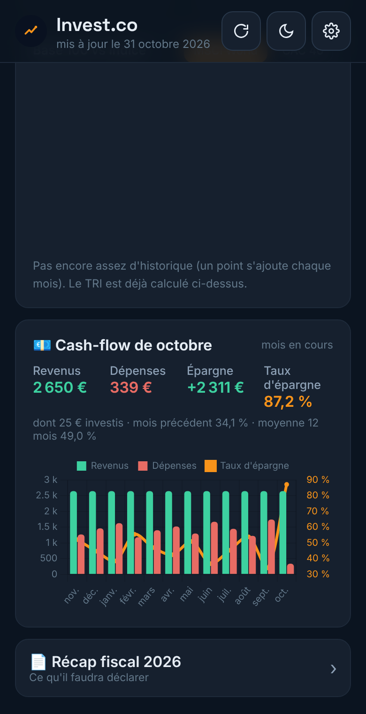
Après cinq codes erronés, la saisie est bloquée 30 secondes. Votre code n'est jamais enregistré en clair.
| Moyen | Usage |
|---|---|
| Export manuel | Réglages › Exporter mes données : un fichier à conserver. Un rappel est affiché toutes les deux semaines. |
| Google Drive | Synchronisation optionnelle dans un dossier privé de votre propre Drive. |
| Copies automatiques | Réalisées avant chaque mise à jour, restaurables dans Réglages › Sauvegardes de sécurité. |
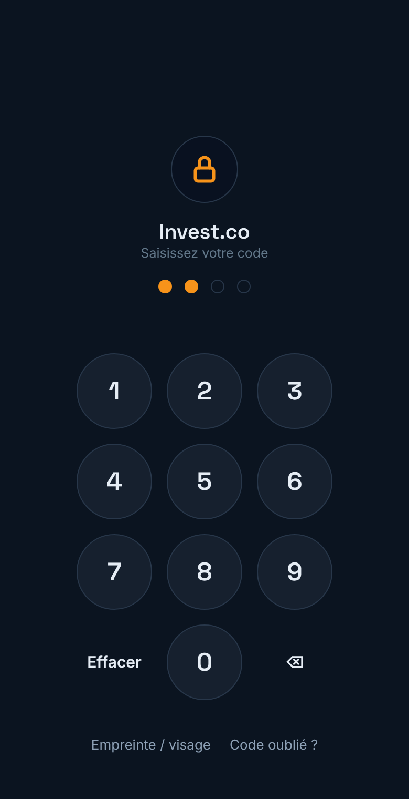
Uniquement sur votre appareil, dans l'espace de stockage de l'application. Elles ne transitent par aucun serveur Invest.co. Si vous activez la synchronisation, une copie est placée dans un dossier privé de votre propre Google Drive.
Seuls les symboles de vos actifs (par exemple « CW8 » ou « BTC/EUR ») sont envoyés aux services de cotation. Aucun montant ni aucune information personnelle n'est transmis, et l'application ne peut contacter aucun autre site que ses sources de cours, ses bibliothèques techniques et votre Google Drive.
Oui pour les cryptomonnaies, tant que l'application est ouverte. Pour les actions et les ETF, le cours est différé d'environ 15 minutes, ou correspond à la dernière clôture.
Touchez Code oublié ? sur l'écran de verrouillage. Pour protéger vos informations, la seule issue est d'effacer les données de l'application sur cet appareil, puis de les restaurer depuis un export ou Google Drive.
Oui. Chaque appareil possède ses propres données ; utilisez l'export / import ou la synchronisation Google Drive pour les retrouver partout.
Vérifiez qu'il s'agit bien d'un fichier CSV, puis corrigez les colonnes proposées dans l'écran d'import. Les relevés PDF sont lus ligne par ligne : contrôlez attentivement le sens de chaque montant.
Deux personnes utilisant le même appareil et le même navigateur partagent les mêmes données. Chaque utilisateur doit disposer de son propre appareil ou de son propre profil de navigateur.
Réglages › Réinitialiser, puis choisissez une base vide. Pour un effacement complet, supprimez également les données du site dans les réglages de votre navigateur — après avoir exporté une sauvegarde si nécessaire.
Vos données ne sont récupérables que depuis une sauvegarde exportée ou la synchronisation Google Drive. Nous vous recommandons de sauvegarder régulièrement.
Invest.co est un outil de suivi et d'organisation de vos finances personnelles. Il ne constitue ni un conseil en investissement, ni un conseil fiscal, juridique ou patrimonial, et ne recommande aucun produit financier. Les performances passées ne préjugent pas des performances futures ; tout investissement comporte un risque de perte en capital.
Les montants « nets d'impôt », le récapitulatif fiscal et les régimes proposés sont des estimations établies à partir des règles en vigueur à la date de publication et des réglages que vous renseignez. Ils ne se substituent pas à votre déclaration de revenus : vérifiez toujours vos montants sur impots.gouv.fr et, en cas de doute, consultez un professionnel.
Les calculs reposent sur les informations que vous saisissez ou importez. Les cours de bourse et de crypto sont fournis par des sources tierces, sans garantie d'exactitude ni de disponibilité. Les taux et plafonds réglementaires sont mis à jour avec l'application ; vous pouvez les consulter et les compléter dans les Réglages.
Vos données financières sont conservées localement sur votre appareil et ne sont pas collectées par Invest.co. Les seules destinations réseau autorisées sont les sources de cours, les bibliothèques techniques et votre Google Drive. Protégez l'accès à votre appareil (code, biométrie) et conservez vos sauvegardes exportées dans un endroit sûr : elles contiennent l'ensemble de vos informations financières en clair.
Les noms de banques, de plateformes et de services cités dans ce guide (notamment Bitstack, Google Drive, Chrome, Safari) sont des marques de leurs propriétaires respectifs. Leur mention a un caractère uniquement informatif et n'implique aucun partenariat.
Guide utilisateur Invest.co — édition {{EDITION}}, correspondant à la version {{VERSION}} de l'application. Les écrans présentés utilisent des données fictives et peuvent différer légèrement selon votre appareil et la version installée.